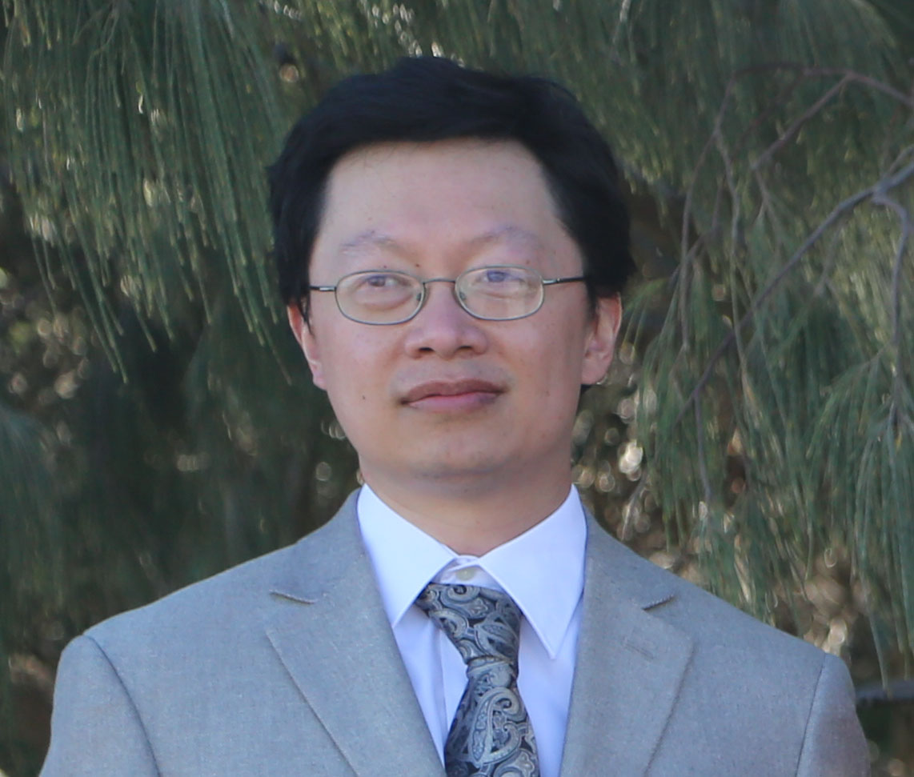

OBJECTIVE
To bring my experience as a professional developer to your organization,
so that its software solutions will continue to benefit its customers.
SKILLS
- Proficient in programming in C++, particularly Visual C++.
-
Experienced with developing single-threaded and multithreaded Win32
applications for Windows operating system.
-
Experienced with using Visual Studio and WinDbg for debugging
applications.
-
Experienced with triaging and resolving software bugs reported by
customers and internally.
- Able to speak and write clearly and effectively in English.
- Able to learn quickly.
WORK EXPERIENCE
Bravura Security Inc.
Senior Software Developer, June 2005 - October 2023
-
Maintained database backend of enterprise-level identity management
system produced by company.
-
Designed, implemented, and maintained product configuration migration
tool for product upgrades.
-
Designed and implemented CGI-based, generic ODBC data browser for new
product feature.
-
Implement automated regression tests for database backend updates and
other fixes.
- Maintained Windows installers for company products.
-
Ported API from old to current version of company product, and
maintained current API server.
- Maintained question-based authentication module of product.
-
Implemented and maintained product configuration import/export tool.
-
Extended ability of single sign-on utility to support client's specific
software environment.
Sequiter Software Inc.
Product Consultant and Porting Specialist, April 1997 - May 2005
-
Investigated reports of software bugs, fixing valid bugs either by
myself or with the assistance of the head developer.
-
Ported, tested, and maintained company's Windows-based C database
programming library for other operating systems and programming
languages.
-
Implemented or ported customer-requested features to database
programming library.
-
Produced installation packages and customer documentation for ported and
implemented software.
- Answered sales and technical questions from customers.
-
Designed and implemented in-house database utility to improve efficiency
of shipping department operations.
EDUCATION
University of Alberta Bachelor of Science with Specialization in Computer
Science - 6.0 GPA, April 1997
Contact me